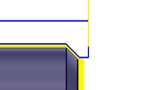
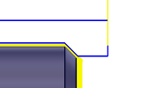

<div id="clearanceZ"><p>切削の始点を基準にした Z 軸クリアランス距離。</p>
<table class="tipTable" cellspacing="10">
<tr>
<td><center></center></td>
<td><center></center></td>
</tr><tr>
<td><center><p><b>Z 距離 0.030 インチ</b></p></center></td>
<td><center><p><b>Z 距離 0.090 インチ</b></p></center></td>
</tr></table>
</div>